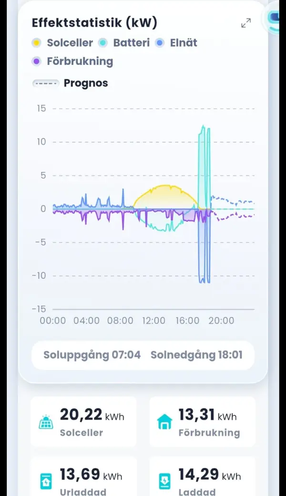

Om Norsolis – så fungerar tjänsten
Kort svar: Vad är Norsolis? Norsolis är en transparent jämförelsetjänst för batterier och solceller, finansierad av anslutna installatörer. Du kan räkna på ditt hus, läsa guider med källor och be om offerter från upp till tre installatörer i ditt område. Det är gratis för dig.
Därför startade jag Norsolis
I oktober 2026 fick familjens landställe i Stockholms skärgård solceller: 14 paneler på 500 W vardera, alltså 7 kWp, och ett batteri. Min far var nöjd med hela processen, och han blev särskilt imponerad av att installationen var klar på bara två arbetsdagar.
Det som gör mest intryck i vardagen är att solen inte tar slut när den går ner. Batteriet sparar dagens sol till kvällen, och i appen går det att följa i realtid hur panelerna producerar, hur batteriet laddas och vad huset förbrukar. En oktoberdag producerade anläggningen 20,22 kWh medan huset förbrukade 13,31 kWh. Det är en enskild dag, inte ett genomsnitt.
Den erfarenheten vill jag att fler ska kunna få, med tydliga fakta och offerter som är lätta att jämföra. Därför startade jag Norsolis.

Hur tjänsten finansieras
Norsolis är gratis för dig som villaägare eller bostadsrättsförening. Tjänsten finansieras av de installatörer som ansluter sig. De betalar en avgift för förfrågningar som de tar emot och som uppfyller avtalade krav, till exempel att kontaktuppgifterna stämmer och att projektet ligger i deras område. Du betalar ingenting till Norsolis.
Hur installatörerna väljs ut
- Din förfrågan går till upp till tre anslutna installatörer som arbetar där du bor. Finns det färre i ditt område får du färre offerter.
- Elinstallationen ska enligt lag göras av ett elinstallationsföretag som är registrerat hos Elsäkerhetsverket. Det är något du alltid bör kontrollera själv i Elsäkerhetsverkets e-tjänst Kolla elföretaget.
- Vi ska visa vilka installatörer som får din förfrågan, och du bestämmer själv om du vill gå vidare.
Är du installatör? Läs om pilotprogrammet för installatörer.
Jämförelsen täcker inte hela marknaden
Bara installatörer som har avtal med Norsolis kan få förfrågningar via tjänsten. Det finns många andra seriösa företag. Energimyndigheten rekommenderar att du tar in minst tre offerter, och du kan gärna komplettera med offerter du hittar själv. Läs så väljer du solcellsinstallatör.
Redaktionella principer
- Ersättning från installatörer påverkar inte innehållet i guiderna eller kalkylen. Ingen installatör kan köpa en bättre placering i en påstått objektiv rangordning.
- Om vi någon gång visar sponsrade placeringar märks de tydligt.
- Vi lovar inga besparingar. Kalkylen visar antaganden och osäkerhet, och ett verkligt pris kommer bara från en offert.
- Fakta har källor och datum. Hittar du ett fel vill vi gärna veta det.
Vem står bakom Norsolis?
Norsolis drivs av Escritura AB, organisationsnummer 556649-5791, Kolgavägen 2 A, 182 65 Djursholm. Erik Mared, grundare.
Kontakt
Läs också vår integritetspolicy.